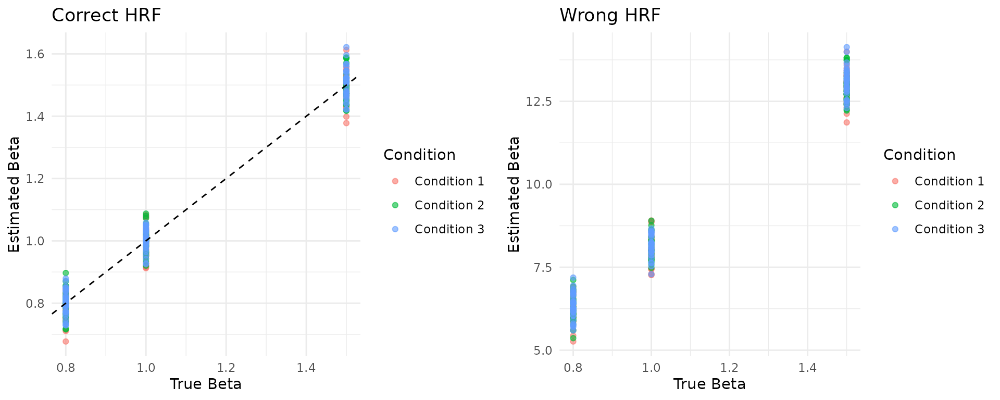
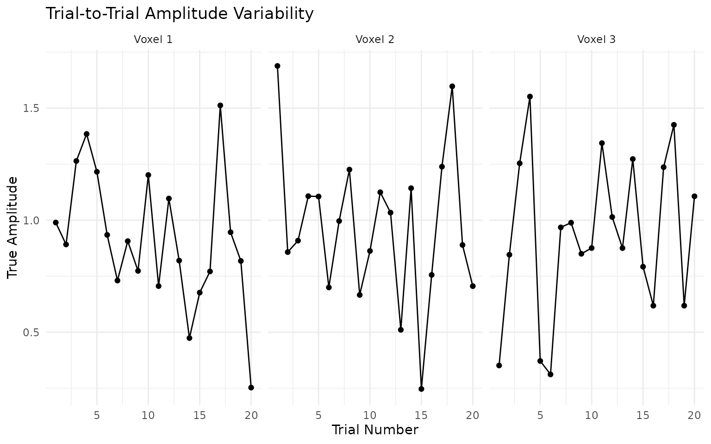

vignettes/benchmark_datasets.Rmd
benchmark_datasets.Rmdtitle: “06. Benchmark Datasets” author: “fmrireg package” date: “2025-09-01” output: rmarkdown::html_vignette vignette: > % % % —
Introduction
The fmrireg package includes a comprehensive set of
benchmark datasets designed for testing and evaluating HRF fitting, beta
estimation, and other fMRI analysis methods. These datasets provide
known ground truth for various challenging scenarios commonly
encountered in fMRI analysis.
This vignette demonstrates how to use these benchmark datasets to evaluate your analysis methods.
library(fmrireg)
#>
#> Attaching package: 'fmrireg'
#> The following object is masked from 'package:stats':
#>
#> convolve
library(ggplot2)
library(dplyr)
#>
#> Attaching package: 'dplyr'
#> The following object is masked from 'package:fmrireg':
#>
#> group_data
#> The following objects are masked from 'package:stats':
#>
#> filter, lag
#> The following objects are masked from 'package:base':
#>
#> intersect, setdiff, setequal, unionAvailable Benchmark Datasets
Let’s start by exploring what benchmark datasets are available:
# List all available datasets
datasets_info <- list_benchmark_datasets()
print(datasets_info)
#> Dataset
#> BM_Canonical_HighSNR BM_Canonical_HighSNR
#> BM_Canonical_LowSNR BM_Canonical_LowSNR
#> BM_HRF_Variability_AcrossVoxels BM_HRF_Variability_AcrossVoxels
#> BM_Trial_Amplitude_Variability BM_Trial_Amplitude_Variability
#> BM_Complex_Realistic BM_Complex_Realistic
#> Description
#> BM_Canonical_HighSNR Canonical HRF (SPMG1), high SNR, 3 conditions, fixed amplitudes per condition
#> BM_Canonical_LowSNR Canonical HRF (SPMG1), low SNR, 3 conditions, fixed amplitudes per condition
#> BM_HRF_Variability_AcrossVoxels HRF varies across voxel groups, 2 conditions, moderate SNR
#> BM_Trial_Amplitude_Variability Single condition with significant trial-to-trial amplitude variability
#> BM_Complex_Realistic Complex realistic scenario: 3 HRF groups, 3 conditions, variable durations/amplitudes, AR(2) noiseLoading and Exploring a Dataset
Let’s load the high SNR canonical dataset and explore its structure:
# Load the high SNR dataset
data <- load_benchmark_dataset("BM_Canonical_HighSNR")
# Get a summary of the dataset
summary_info <- get_benchmark_summary("BM_Canonical_HighSNR")
print(summary_info$dimensions)
#> $n_timepoints
#> [1] 150
#>
#> $n_voxels
#> [1] 100
#>
#> $n_events
#> [1] 45
#>
#> $n_conditions
#> [1] 3
print(summary_info$experimental_design)
#> $conditions
#> [1] "Cond1" "Cond2" "Cond3"
#>
#> $events_per_condition
#> $events_per_condition$Cond1
#> [1] 15
#>
#> $events_per_condition$Cond2
#> [1] 15
#>
#> $events_per_condition$Cond3
#> [1] 15
#>
#>
#> $TR
#> [1] 2
#>
#> $total_time
#> [1] 300
#>
#> $target_snr
#> [1] 4Examining the Data Structure
Each benchmark dataset is a list. Key components include:
-
description: A text summary. -
Y_noisy: The matrix of noisy BOLD time series (time points x voxels). -
Y_clean: (When available) The BOLD signal without noise. -
event_onsets: Vector of event start times. -
condition_labels: Vector of condition names for each event. -
event_durations: Vector of event durations. -
true_betas_condition: Ground truth beta values for each condition. -
true_hrf_parameters: Information about the HRF used in simulation. -
TR,total_time,run_length: Scan parameters.
# Look at the BOLD time series dimensions and event structure
cat("Y_noisy BOLD data dimensions:", dim(data$Y_noisy), "\n")
#> Y_noisy BOLD data dimensions: 150 100
cat("Number of events:", length(data$event_onsets), "\n")
#> Number of events: 45
cat("Conditions:", unique(data$condition_labels), "\n")
#> Conditions: Cond1 Cond2 Cond3
cat("Events per condition:", table(data$condition_labels), "\n")
#> Events per condition: 15 15 15
cat("TR:", data$TR, "\n")
#> TR: 2
cat("Run length:", data$run_length, "\n")
#> Run length:Visualizing the Data
Let’s visualize some aspects of the benchmark dataset:
# Plot the first few voxels' time series
n_timepoints <- nrow(data$Y_noisy)
time_points <- seq(0, by = data$TR, length.out = n_timepoints)
# Create a data frame for plotting
plot_data <- data.frame(
Time = rep(time_points, 3),
BOLD = c(data$Y_noisy[, 1], data$Y_noisy[, 2], data$Y_noisy[, 3]),
Voxel = rep(paste("Voxel", 1:3), each = n_timepoints)
)
# Add event markers
event_data <- data.frame(
Time = data$event_onsets,
Condition = data$condition_labels
)
ggplot(plot_data, aes(x = Time, y = BOLD)) +
geom_line() +
geom_vline(data = event_data, aes(xintercept = Time, color = Condition),
alpha = 0.7, linetype = "dashed") +
facet_wrap(~Voxel, scales = "free_y") +
labs(title = "BOLD Time Series with Event Markers",
x = "Time (seconds)", y = "BOLD Signal") +
theme_minimal()Creating Design Matrices
One of the key features is the ability to create design matrices with different HRF assumptions:
# Create design matrix with the true HRF (canonical)
X_true <- create_design_matrix_from_benchmark("BM_Canonical_HighSNR", fmrihrf::HRF_SPMG1)
# Create design matrix with a different HRF (e.g., a Gaussian HRF instead of canonical)
X_wrong <- create_design_matrix_from_benchmark("BM_Canonical_HighSNR", fmrihrf::HRF_GAUSSIAN)
cat("True HRF design matrix dimensions:", dim(X_true), "\n")
#> True HRF design matrix dimensions: 150 4
cat("Alternative HRF design matrix dimensions:", dim(X_wrong), "\n")
#> Alternative HRF design matrix dimensions: 150 4Method Evaluation Example
Let’s demonstrate how to evaluate a simple method (OLS) on the benchmark dataset:
# Fit ordinary least squares with the correct HRF
betas_correct <- solve(t(X_true) %*% X_true) %*% t(X_true) %*% data$Y_noisy
# Fit OLS with the wrong HRF assumption
betas_wrong <- solve(t(X_wrong) %*% X_wrong) %*% t(X_wrong) %*% data$Y_noisy
# Evaluate performance (remove intercept for comparison)
performance_correct <- evaluate_method_performance("BM_Canonical_HighSNR",
betas_correct[-1, ],
"OLS_Correct_HRF")
performance_wrong <- evaluate_method_performance("BM_Canonical_HighSNR",
betas_wrong[-1, ],
"OLS_Wrong_HRF")
# Compare results
cat("Correct HRF - Overall correlation:", round(performance_correct$overall_metrics$correlation, 3), "\n")
#> Correct HRF - Overall correlation: 0.989
cat("Wrong HRF - Overall correlation:", round(performance_wrong$overall_metrics$correlation, 3), "\n")
#> Wrong HRF - Overall correlation: 0.99
cat("Correct HRF - RMSE:", round(performance_correct$overall_metrics$rmse, 3), "\n")
#> Correct HRF - RMSE: 0.044
cat("Wrong HRF - RMSE:", round(performance_wrong$overall_metrics$rmse, 3), "\n")
#> Wrong HRF - RMSE: 8.415Comparing True vs Estimated Betas
# Get true betas
true_betas <- data$true_betas_condition
# Create comparison plots
comparison_data <- data.frame(
True = as.vector(true_betas),
Estimated_Correct = as.vector(betas_correct[-1, ]),
Estimated_Wrong = as.vector(betas_wrong[-1, ]),
Condition = rep(paste("Condition", 1:3), each = ncol(true_betas))
)
# Plot true vs estimated (correct HRF)
p1 <- ggplot(comparison_data, aes(x = True, y = Estimated_Correct, color = Condition)) +
geom_point(alpha = 0.6) +
geom_abline(slope = 1, intercept = 0, linetype = "dashed") +
labs(title = "Correct HRF", x = "True Beta", y = "Estimated Beta") +
theme_minimal()
# Plot true vs estimated (wrong HRF)
p2 <- ggplot(comparison_data, aes(x = True, y = Estimated_Wrong, color = Condition)) +
geom_point(alpha = 0.6) +
geom_abline(slope = 1, intercept = 0, linetype = "dashed") +
labs(title = "Wrong HRF", x = "True Beta", y = "Estimated Beta") +
theme_minimal()
# Display plots side by side
gridExtra::grid.arrange(p1, p2, ncol = 2)
Testing Different Datasets
Let’s compare performance across different benchmark scenarios:
# Test on different datasets
datasets_to_test <- c("BM_Canonical_HighSNR", "BM_Canonical_LowSNR")
results <- list()
for (dataset_name in datasets_to_test) {
# Load dataset and create design matrix
X <- create_design_matrix_from_benchmark(dataset_name, fmrihrf::HRF_SPMG1)
data_test <- load_benchmark_dataset(dataset_name)
# Fit model
betas <- solve(t(X) %*% X) %*% t(X) %*% data_test$Y_noisy
# Evaluate performance
perf <- evaluate_method_performance(dataset_name, betas[-1, ], "OLS")
results[[dataset_name]] <- list(
correlation = perf$overall_metrics$correlation,
rmse = perf$overall_metrics$rmse,
target_snr = data_test$target_snr
)
}
# Display results
results_df <- data.frame(
Dataset = names(results),
Correlation = sapply(results, function(x) round(x$correlation, 3)),
RMSE = sapply(results, function(x) round(x$rmse, 3)),
Target_SNR = sapply(results, function(x) x$target_snr)
)
print(results_df)
#> Dataset Correlation RMSE Target_SNR
#> BM_Canonical_HighSNR BM_Canonical_HighSNR 0.989 0.044 4.0
#> BM_Canonical_LowSNR BM_Canonical_LowSNR 0.595 0.410 0.5HRF Variability Dataset
Let’s explore the dataset with HRF variability across voxels:
# Load the HRF variability dataset
hrf_data <- load_benchmark_dataset("BM_HRF_Variability_AcrossVoxels")
# Examine the HRF group assignments
cat("HRF group assignments:", table(hrf_data$true_hrf_group_assignment), "\n")
#> HRF group assignments: 50 50
# Note: The actual HRF objects used vary by voxel
# The benchmark dataset contains voxels with different HRF shapes to test
# methods that can handle HRF variability across the brainTrial Amplitude Variability
Let’s examine the trial-to-trial variability dataset:
# Load the trial variability dataset
trial_data <- load_benchmark_dataset("BM_Trial_Amplitude_Variability")
# Look at the trial-wise amplitudes
true_trial_amps <- trial_data$true_amplitudes_trial
# Plot amplitude variability across trials for first few voxels
amp_plot_data <- data.frame(
Trial = rep(1:nrow(true_trial_amps), 3),
Amplitude = c(true_trial_amps[, 1], true_trial_amps[, 2], true_trial_amps[, 3]),
Voxel = rep(paste("Voxel", 1:3), each = nrow(true_trial_amps))
)
ggplot(amp_plot_data, aes(x = Trial, y = Amplitude)) +
geom_line() +
geom_point() +
facet_wrap(~Voxel) +
labs(title = "Trial-to-Trial Amplitude Variability",
x = "Trial Number", y = "True Amplitude") +
theme_minimal()
Summary
The fMRI benchmark datasets provide a comprehensive testing framework for:
-
Basic validation: Use
BM_Canonical_HighSNRfor initial method testing - Noise robustness: Compare performance between high and low SNR datasets
-
HRF estimation: Test methods on
BM_HRF_Variability_AcrossVoxels -
Single-trial analysis: Evaluate LSS methods on
BM_Trial_Amplitude_Variability -
Complex scenarios: Challenge methods with
BM_Complex_Realistic
Key advantages:
- Known ground truth: All parameters are precisely controlled and recorded
- Realistic noise models: AR(1) and AR(2) noise with physiologically plausible parameters
- Comprehensive evaluation: Built-in performance metrics and comparison tools
- Reproducible: Fixed random seeds ensure consistent results
- Extensible: Framework allows easy addition of new benchmark scenarios
These datasets enable rigorous, standardized evaluation of fMRI analysis methods and facilitate fair comparisons between different approaches.